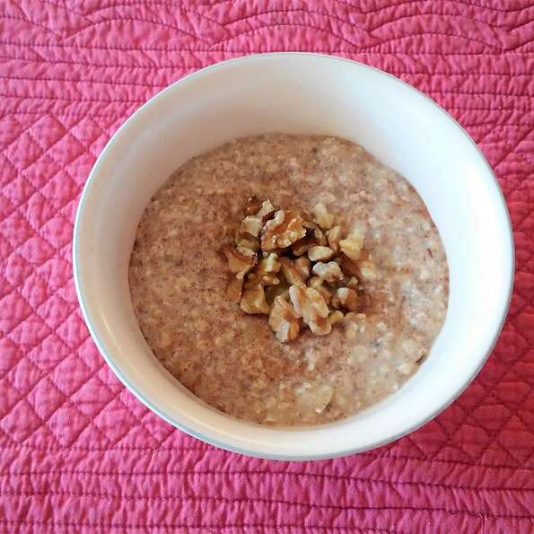

!
Odin Recipes - Power Oatmeal
Power Oatmeal

Easy oatmeal breakfast that keeps one full for hours. Goes great with just
about any addition you can imagine: fruit, nuts, other grains...whatever
you desire to start your day right!
Ingredients
- 1 cup quick cooking oats
- 1 cup soy milk
- 1/2 cup Greek yogurt
- 1 banana, mashed
- 3 tablespoons flax seed meal
- 2 tablespoons peanut butter
Steps
- Whisk oats, soy milk, yogurt, banana, flax seed meal, and peanut butter
together in a bowl until thoroughly mixed.
- Refrigerate until set, at least 15 minutes.